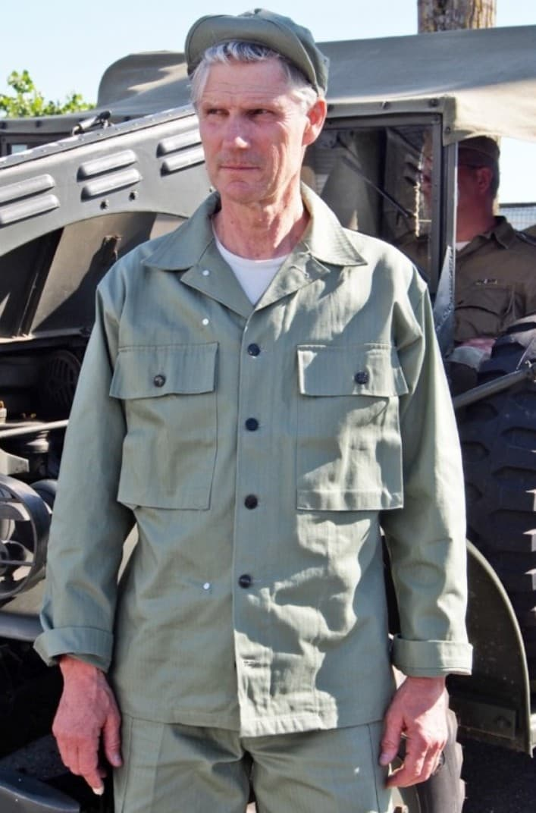
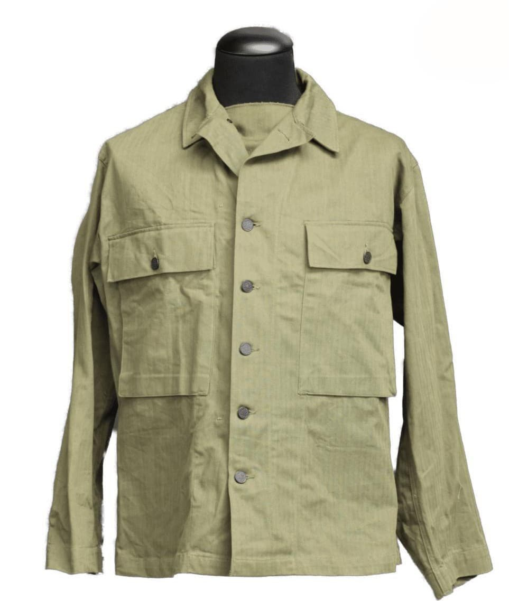

La tenue HBT (Herringbone Twill) est l’uniforme de travail standard de l’US Army durant la Seconde Guerre mondiale. Conçue pour les tâches quotidiennes, les opérations de maintenance, les manœuvres et les environnements chauds, elle devient rapidement un uniforme polyvalent utilisé aussi en combat.
Fabriquée en coton épais à chevrons, elle offre une excellente résistance à l’usure, un confort supérieur et une ventilation appréciable dans les climats chauds. Les unités du Pacifique, notamment, en font un usage intensif.
La tenue HBT se compose généralement d’une veste et d’un pantalon assortis, tous deux fabriqués dans un tissu coton à chevrons très robuste. La coupe est ample, pensée pour faciliter les mouvements et supporter les travaux physiques.
Plusieurs versions existent : modèle 1941, modèle 1942 et modèle 1943, avec des variations dans les poches, les boutons et la coupe. Les Marines (USMC) utilisent également une version spécifique camouflée.


Introduite avant l’entrée en guerre des États-Unis, la tenue HBT devient rapidement indispensable pour les troupes engagées dans le Pacifique, où la chaleur et l’humidité rendent les uniformes en laine impraticables.
En Europe, elle est utilisée pour les travaux, les manœuvres et parfois en combat, notamment par les unités mécanisées et les équipages de chars. Sa robustesse et son confort en font l’un des uniformes les plus appréciés des soldats américains.